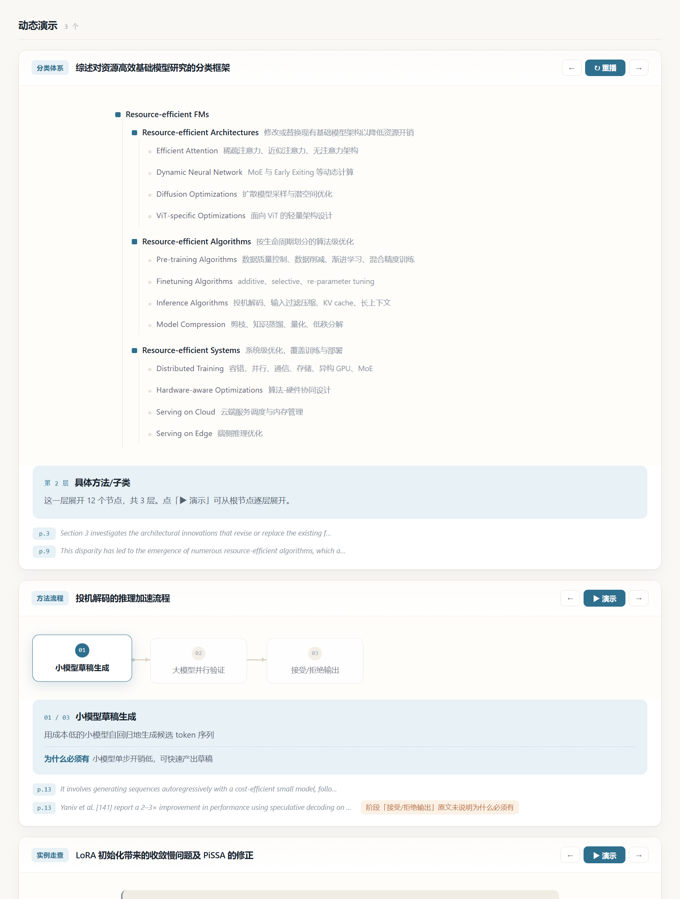
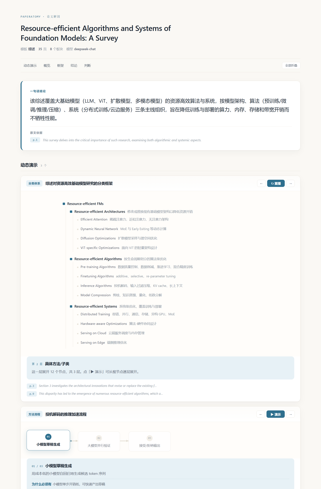

不是和它聊天，是让它自己交代清楚：研究问题、背景、方法、数据、结论、局限。
每块都附页码与原文摘录，可以逐条核对。方法流程与分类框架还能逐段播放。
35 页 ACM 综述。分类框架拆成三层逐层展开，开放问题保留原始 5 条。
五分钟判断值不值得细读：结论、问题、缺口、方法、结果、可用性。

上面三张卡片都是可播放的：分类体系按层展开，方法流程逐段点亮并说明「这一步做什么 / 为什么必须有」， 具体例子走一遍把卡点标红。AI 不画图，只负责选原语和填空——画法是手写组件，样式稳定、可校验。

每一块底部列出原文页码与摘录；低置信度的判断会单独标出。
聊天工具要求你先知道该问什么 —— 而「不知道该问什么」正是读不懂的状态。 这里骨架是预设的，打开即完整，不需要你提问。 另外每句话都有出处：聊天给你一段话，你不知道它从哪来。
没有原文依据就不演。每个演示必须带页码与原文摘录，没有的判不合法——一个编出来的动画比没有动画更糟。
没有卡点就不算例子。所有步骤都没有「卡在哪」时，实例走查直接判不合法。
讲不清为什么就要提示。方法流程里某一步的必要性原文没说明时，报告打橙标，而不是假装它很合理。
git clone https://github.com/1fish4/paperatomy.git
cd paperatomy
pip install -e ".[dev]"
paperatomy config set --api-key sk-xxx --model deepseek-chat
paperatomy extract paper.pdf -t survey -l zh -o out/paper
paperatomy visuals out/paper.json # 已有报告单独补演示
产出三个文件：.json（结构化）、.md（贴笔记）、
.html（单文件报告，含可播放的演示）。